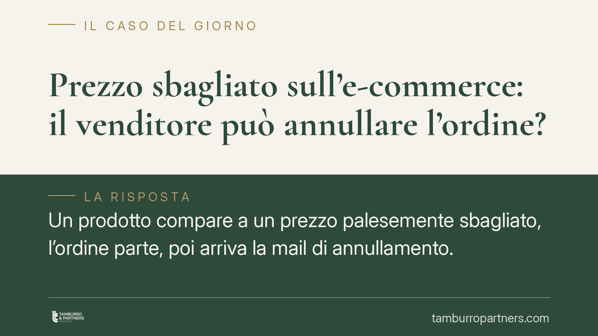

Prezzo sbagliato sull'e-commerce: il venditore può annullare l'ordine?
Un prodotto compare a un prezzo palesemente sbagliato, l'ordine parte, poi arriva la mail di annullamento. È lecito? La risposta dipende dalla natura dell'errore e dal momento in cui il contratto si perfeziona. Un tema che tocca ogni giorno consumatori e gestori di piattaforme e-commerce, con conseguenze pratiche tutt'altro che scontate.

Il caso: quando il prezzo online è manifestamente errato
Capita di frequente. Uno smartphone da 800 euro appare in vendita a 80, oppure un elettrodomestico con uno sconto impossibile. Gli ordini si accumulano in poche ore. Poi il venditore comunica l'annullamento e il rimborso.
La domanda giuridica è duplice: il contratto si è già formato? E se sì, può essere annullato per errore?
Inquadramento normativo
Nel commercio elettronico il contratto si conclude, di regola, quando il proponente ha conoscenza dell'accettazione (art. 1326 c.c.). Il d.lgs. 70/2003, che disciplina i servizi della società dell'informazione, impone al venditore di riscontrare senza indugio l'ordine ricevuto. Attenzione però: la conferma automatica di ricezione dell'ordine non equivale sempre all'accettazione della proposta. Molte condizioni generali di vendita prevedono espressamente che il contratto si perfezioni solo con la successiva conferma di spedizione o accettazione. Questa clausola, se chiara e conosciuta prima dell'ordine, sposta in avanti il momento di conclusione.
Se il contratto è già concluso, entra in gioco l'errore. Gli artt. 1427-1430 c.c. consentono l'annullamento (tecnicamente: l'annullabilità) quando l'errore è essenziale e riconoscibile dall'altra parte. L'errore sul prezzo è essenziale quando cade sull'oggetto economico dell'affare. È riconoscibile quando un contraente di normale diligenza avrebbe potuto avvedersene: un prezzo dieci volte inferiore al valore di mercato rende l'errore, di norma, riconoscibile.
Sul versante consumeristico, l'art. 51 del d.lgs. 206/2005 (Codice del Consumo) impone obblighi informativi stringenti e trasparenza sul prezzo prima che l'ordine vincoli il consumatore. Il venditore non può quindi trincerarsi dietro condizioni oscure o nascoste.
Implicazioni pratiche
Per il venditore, la possibilità di annullare non è automatica. Deve dimostrare che l'errore era genuino (un refuso, un problema di listino) e che il prezzo era talmente anomalo da risultare riconoscibile a un acquirente attento. Se invece l'errore era contenuto (uno sconto plausibile) o se il contratto risultava già perfezionato senza clausole sospensive, l'annullamento diventa problematico e può esporre a responsabilità.
Per il consumatore, la tutela è concreta ma non illimitata. Chi acquista in buona fede un prodotto a un prezzo credibile ha argomenti solidi per pretendere l'adempimento. Chi invece approfitta di un prezzo palesemente frutto di errore si trova in posizione debole: il diritto non protegge l'intento speculativo su uno sbaglio evidente.
Il discrimine, dunque, ruota attorno a due fattori: come sono redatte le condizioni di vendita e quanto è anomalo lo scostamento rispetto al prezzo reale.
Cosa fare in concreto
Per chi vende online:
- Verificate le condizioni generali di vendita: chiarite in modo espresso il momento in cui il contratto si conclude (ricezione ordine o conferma di spedizione).
- Predisponete controlli automatici sui listini per intercettare scostamenti anomali prima della pubblicazione.
- In caso di errore, comunicate l'annullamento tempestivamente, con motivazione, e disponete il rimborso immediato.
Per chi acquista:
- Conservate schermate dell'offerta, dell'ordine e della conferma ricevuta: sono la prova del momento e delle condizioni dell'acquisto.
- Valutate la plausibilità del prezzo: se lo scostamento è modesto avete argomenti per pretendere l'esecuzione; se il prezzo è irreale, la pretesa è più fragile.
In entrambi i casi, quando l'importo è rilevante o la controparte contesta, consigliamo di far esaminare le condizioni di vendita e la corrispondenza prima di intraprendere qualsiasi iniziativa.
Un tema che rimane aperto
La giurisprudenza continua a muoversi caso per caso, bilanciando la protezione del consumatore con il principio di buona fede. Non esiste una soglia numerica fissa oltre la quale l'errore diventa riconoscibile: conta il contesto complessivo dell'operazione. Per questo la redazione accurata delle condizioni contrattuali resta la prima e più efficace forma di prevenzione del contenzioso.
Disclaimer
Contributo informativo a cura di Tamburro & Partners - Avv. Giuseppe Tamburro. Non costituisce parere legale.
Ogni contratto ha il suo equilibrio.
Se vuoi una revisione delle clausole o una redazione su misura, scrivi allo studio. Ti rispondiamo entro un giorno lavorativo.